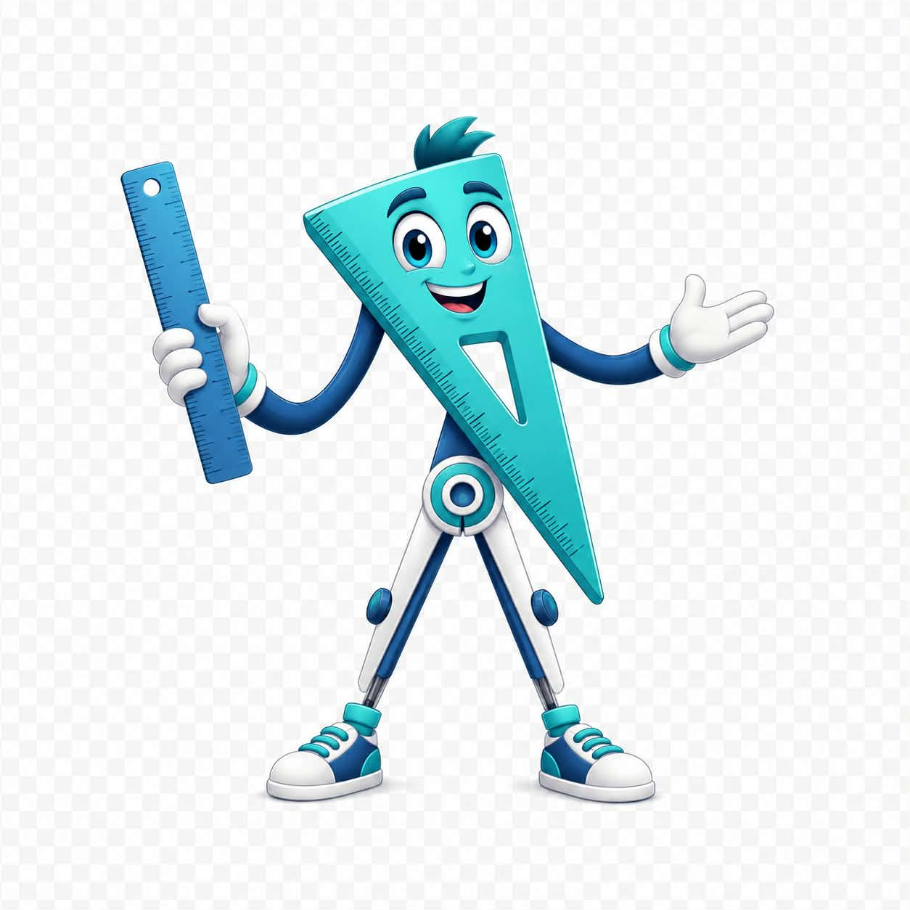

Социален детектив
25 различни ситуации при всяко стартиране. Без таймер и без отнемане на точки.
Гео: „Наблюдавай внимателно. Спри, помисли и избери най-подходящата реакция. Понякога думите са смешни, тъжни или имат преносен смисъл!“
🛑СТОПКакво се случва?
💭ПОМИСЛИКак се чувстват хората?
🎯ДЕЙСТВАЙКой избор помага?
Иконката „Социален детектив“ ще се появи на началния екран/работния плот след инсталиране.
💬
Какво би направил?